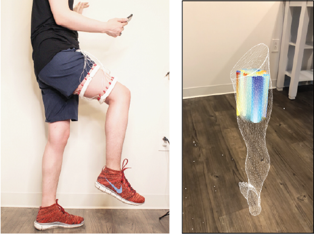
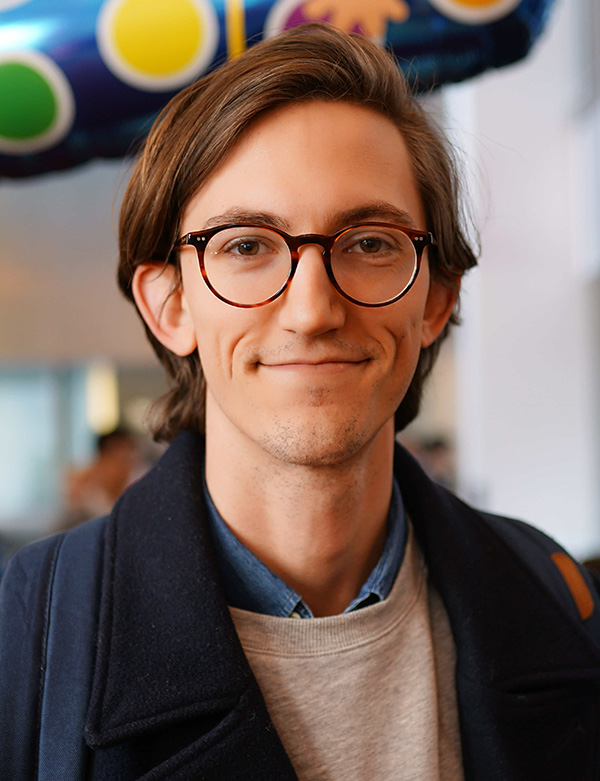
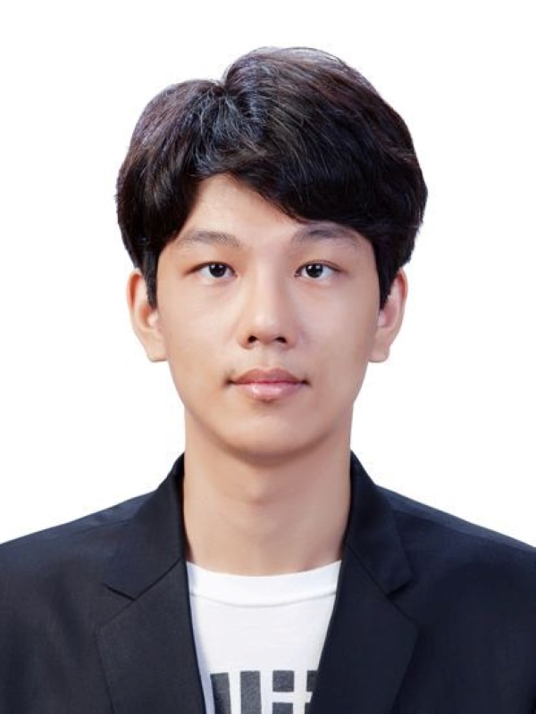
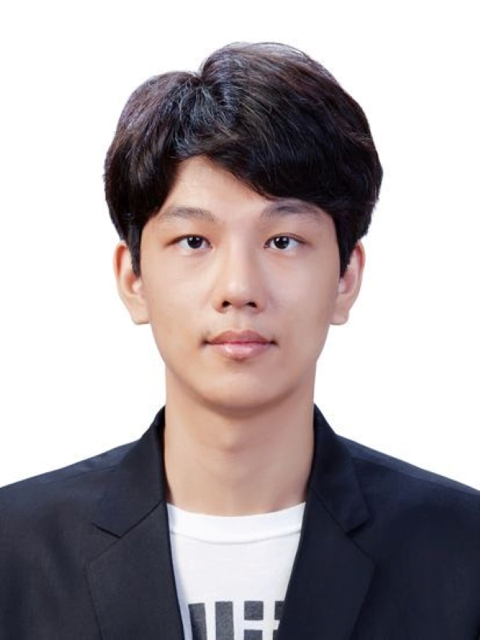
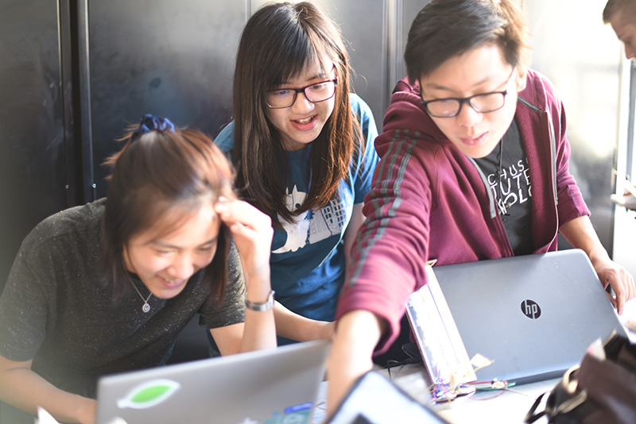

Stefanie Mueller
TIBCO Career Development Associate ProfessorMIT Electrical Engineering and Computer Science, joint with Mechanical Engineering MIT Computer Science and Artificial Intelligence Laboratory Head of the HCI Engineering Group Email: stefanie.mueller@mit.edu [Curriculum Vitae]
Research
As a Human-Computer Interaction (HCI) researcher in the area of manufacturing and design, I develop novel fabrication techniques that combine innovations in hardware, materials, and computational algorithms to create interactions with objects that have not been possible before. Every day we interact with hundreds of objects. What our objects can be used for and how we use them, has a large impact on how we live our everyday lives. Many of the properties of our objects and thus the resulting interactions we have with them are determined by the materials they are made of and the manufacturing techniques used to make them. My work develops novel fabrication techniques that leverage innovations in hardware, materials, and computational algorithms to give objects capabilities that go beyond the type of interactions that exist today.Objects with Interactive Appearances
We investigate what interactions become possible when physical objects are able to change their appearance. We develop computational fabrication techniques that create appearance-changing objects using photochromic dyes that can create multi-color textures that are reprogrammable on-demand; high-resolution multi-color 3D printing to fabricate lenticular lenses across an object’s surface to enable viewpoint-based appearance changes; birefringent materials that creates rotation-based appearance changes via polarized light mosaics; and optical illusions to create animated physical photographs.|
Photo-Chromeleon (ACM UIST 2019, Best Paper Award) |
 Lenticular Objects (ACM UIST 2021) |
Polagons (ACM CHI 2023) |
KineCam (ACM SIGGRAPH 2022 Art Paper) |
Tracking Interactions via Markers
To keep objects passive while still being able to track interactions with them, we explore fabrication techniques that create invisible markers from infrared-translucent filament that can be tracked with IR cameras, create identifiable surface features based on artifacts of slicing and 3D printing that can be tracked with regular cameras, leverage existing surface features of materials via speckle imaging with a lens-less image sensor, or use magnetic pixels that can be read using hall effect sensors and viewed under magnetic viewing film.
 InfraredTags (ACM CHI 2022) |
 G-ID (ACM CHI 2020) |
 SensiCut (ACM UIST 2021) |
 Mixels (ACM UIST 2022) |
Embedding Sensing into Objects
Capturing interactions where they occur on an object can be challenging for curved, deformable, and moving object geometries. We develop fabrication techniques that integrate sensing with moving parts such as mechanisms where sensors and wires can interfere with the object function, deformable objects where sensors are difficult to adhere, and large-scale objects where current sensors are not able to capture the interaction wholistically.
 MechSense (ACM CHI 2023) |
 MetaSense (ACM UIST 2021) |
 Sprayable User Interfaces (ACM CHI 2020) |
 LaserFactory (ACM CHI 2021) |
Prototyping on Curved Surfaces
Prototyping physical user interface is an essential process for product designers to explore new user interface designs. Rapid prototyping of which electronic components to use and where to place them, however, is challenging on curved object geometries. To address this issue, we developed novel types of breadboards that are flexible and curved, new electronic design tools for reforming existing sensor modules, and visualization tools to preview sensor coverage before physically building the prototype.|
FlexBoard (ACM CHI 2023) |
 CurveBoard (ACM CHI 2020) |
 MorphSensor (ACM UIST 2020) |
 SensorViz (ACM DIS 2022) |
Design Practice
There is a rapidly growing group of people learning fabrication and crafting skills. Without tools that support them, these learners are often left to discover the challenges and pitfalls through trial and error. To facilitate learning new skills, we developed computational design software that extracts the most difficult steps in a design and generates additional practice steps and also previews the amount of material that a design will take.
 InStitches (ACM CHI 2023) |
 Fabricaide (ACM CHI 2021) |
Prototyping Health Sensing Devices
Designing health sensing devices that are customized to each user, both in their shape to fit the user’s body and in their health sensing functions, is a challenging problem. We developed a prototyping environment to design customized wearable devices that can monitor which muscles a user is engaging and how much they are tensed, which is required for applications, such as monitoring patient’s exercises in at-home physical rehabilitation and monitoring athletes to prevent overstraining their muscles.|
 EIT-Kit (ACM UIST 2021) |
 MuscleRehab (ACM UIST 2022) |
Awards
- MIT Technology Review 'Innovators Under 35' 2022
- Microsoft Research Faculty Fellowship 2020
- Alfred P. Sloan Research Fellowship 2020
- Best Paper Award, ACM UIST 2019
- NSF CAREER Award 2019
- MIT EECS Outstanding Educator 2018
- ACM Doctoral Dissertation Award Honorable Mention 2018
- ACM SIGCHI Best Dissertation Award 2018
- GI Dissertation Award 2018
- Forbes 30 under 30 in Science, 2017
- Best Paper Nominee, ACM CHI 2015
- Best Paper Nominee, ACM CHI 2014
- Best Paper Award, ACM CHI 2013
Invited Talks
- 02/22 Accenture Global Labs
- 05/21 University College London
- 05/21 University of Calgary
- 01/20 Bandung Institute of Technology
- 12/19 LMU Munich
- 07/19 Google Research Cambridge
- 11/17 Stanford David H. Liu Memorial Lecture Series
- 06/18 Hewlett Packard
- 05/17 Northwestern University
- 07/17 RSS 2017 Women in Robotics Workshop
- 07/16 Max Planck Institute
- 04/16 Technion (Israel Institute of Technology)
- 04/16 Cornell Tech
- 04/16 Cornell University
- 03/16 Columbia University
- 03/16 Princeton University
- 03/16 Carnegie Mellon University
- 03/16 U Michigan Ann Arbor
- 03/16 Brown University
- 03/16 UIUC, host Karrie Karahalios
- 03/16 University of Toronto
- 07/03/16 Harvard University
- 02/03/16 UCSD
- 02/16 University of British Columbia
- 02/16 University of Washington
- 02/16 MIT EECS
- 02/16 MIT MechE
- 02/16 Yale University
- 02/16 Stanford University
- 02/16 UC Berkeley
- 02/16 Max Planck Institute
- 01/16 Adobe Research
- 12/15 Royal College of Art
- 12/15 UCSD
- 12/15 FXPAL
- 11/15 MIT CSAIL
- 11/15 MIT Media Lab
- 11/15 Cornell Tech
- 11/15 Carnegie Mellon University
- 06/15 Newcastle University
- 06/15 University of Bristol
- 06/15 IST Austria
- 02/15 The Hebrew University
- 01/15 Adobe Research San Francisco
- 12/14 Rakuten Institute
- 12/14 University of Tokyo
- 12/14 EPFL
- 11/14 Disney Research Zürich / ETH
- 08/14 University of Washington
- 06/14 MSR Redmond
- 09/13 Media Interaction Lab
- 05/13 MSR Cambridge
Mentoring
Postdocs: Over the last 6 years, I have been an advisor to 9 postdocs. 4 of them are now faculty members at institutions around the world, including Aarhus University in Denmark, Osaka University and Keio University in Japan, and Chung-An University in South Korea. Two of my former postdocs now work in industry (Google, Formlabs) and one has taken on a lecturer position.


PhD Students: I'm currently advising 9 PhD students from Electrical Engineering and Computer Science, Mechanical Engineering, and Media Arts and Sciences. My students have received many honors, including Adobe Research, Meta Research, and Siebel Fellowships as well as several teaching, mentoring and public service awards.



Master Thesis Research: Over the last years, my lab has advised more than 20 master thesis. Four master students received MIT EECS Awards for the Best Master Thesis in Computer Science and Artificial Intelligence.


Undergraduate and Master Student Research: I'm a strong advocate for undergraduate research both to educate undergraduates on how to conduct great research and to train my PhD students in how to mentor students and manage a research lab. Over the last 6 years, my lab has mentored more than 70 undergraduate researchers with many students staying on for two or more semesters and subsequently writing their master thesis in the lab. The undergraduates in my lab have been extraordinarily successful receiving 9 MIT EECS Best Undergraduate Researcher Awards. Two of my PhD students Junyi Zhu and Martin Nisser, who were particularly active in mentoring undergraduate researchers, received the 2021-2022 and 2022-2023 Thomas Stockham Jr. Fellowship from the MIT EECS department, which is given to PhD students with an extraordinary teaching and mentoring track record. Undergraduates in my lab have co-authored more than 20 publications at the top conferences in Human-Computer Interaction. Many undergraduates have attended research conferences and either given a live demonstration or part of the conference talk. Several of my undergraduate researchers are now applying to PhD programs at top institutions.


 



Postdoc / PhD Fellowships
- MIT CSAIL METEOR fellowship 2022 (Mackenzie Leake)
- Siebel Fellowship 2022 (Junyi Zhu)
- Meta Fellowship 2022 (Dishita Turakhia)
- MIT Thomas Stockham Jr. Fellowship 2021 (Junyi Zhu)
- Adobe Research Fellowship 2021 (Mustafa Doga Dogan)
- MIT Frederick C. Hennie III Teaching Award 2021 (Junyi Zhu)
- MIT Teaching Award from The Educational Justice Institute 2021 (Martin Nisser)
- MIT Priscilla King Gray for Public Service 2022 (Martin Nisser)
- MIT Seth J. Teller Award for Excellence, Inclusion and Diversity 2022 (Martin Nisser)
- MIT Collier Medal 2023 (Martin Nisser)
- MIT EECS 2023 Guillemin Best Master Thesis Award in Artificial Intelligence and Decision Making 2023 (Olivia Seow)
- MIT EECS Charles & Jennifer Johnson Best Computer Science Master Thesis Award 2023 (Veerapatr Yotamornsunthorn)
- MIT EECS Charles & Jennifer Johnson Best Computer Science Master Thesis Award 2021 (Christina Liao)
- MIT EECS Charles and Jennifer Johnson Best Computer Science Master Thesis Award 2019 (Kenneth Friedman)
- MIT EECS Jeremy Gerstle Best Undergraduate Researcher Award 2023 (Raiphy Jerez)
- MIT EECS Anna Pogosyants Best Undergraduate Researcher Award 2023 (Ahmed Katary)
- MIT EECS Morais & Rosenblum Best Undergraduate Researcher Award 2022 (Ahmad Taka)
- MIT EECS Morais & Rosenblum Best Undergraduate Researcher Award 2021 (Steven Acevedo Colon)
- MIT EECS Licklider Best Undergraduate Researcher Award 2021 (Yunyi Zhu)
- MIT EECS SuperUROP Outstanding Research Award 2020 (Yunyi Zhu)
- MIT EECS Licklider Best Undergraduate Researcher Award 2020 (Carlos M. Castillo Lozada)
- MIT EECS Morais & Rosenblum Best Undergraduate Researcher Award 2019 (Aradhana Adhikari)
- MIT EECS Licklider Best Undergraduate Researcher Award 2018 (Xin Wen)
Professional Service
Paper Co-Chair ACM CHI and ACM UIST: I have held many leadership roles for the premier Human-Computer Interaction conferences ACM CHI and ACM UIST. For instance, I served as an ACM CHI 2023 Paper Co-Chair. For this role, I oversaw the review process for ~3,500 paper submissions and led a program committee of ~450 faculty members and industry researchers on 16 program committees. To improve the ACM CHI review process, I worked with the ACM CHI Steering Committee to change the revise and resubmit process to improve the quality of publications. In a similar role, I served as the Paper Co-Chair forACM UIST 2020, leading a program committee of ~65 faculty and overseeing ~450 paper submissions. Since the 2020 review process was significantly impacted by Covid-19, we had to significantly revise the submission and review timeline for the 2020 conference. To address the hardship faced by researchers worldwide, we restructured the review process by moving the paper deadline to a later date, removing the rebuttal phase to make up for the lost time, and including additional evaluation methods to remove the need for human-subject studies, which were not feasible at the time, and organized the first-ever virtual program committee for the conference.
General Co-Chair and Steering Committee Chair for the ACM Symposium on Computational Fabrication: In the field of fabrication, I served as the General Co-Chair for the “ACM Symposium of Computational Fabrication” (ACM SCF), an event founded in 2016 and now annually held with around 150 attendees. As the second General Co-Chair in 2017, I worked with ACM to convert the non-affiliated conference into an ACM conference with a new technical papers program and archival proceedings in the ACM Digital Library. Since 2023 I'm serving as the ACM SCF Steering Committee Chair where I'm responsible for the long-term strategic planning of the conference series.
ACM CHI Subcommittee 'Building Devices: Hardware, Materials, and Fabrication': To further help the field of fabrication grow, I created a proposal for a new ACM CHI Subcommittee called ‘Building Devices: Hardware, Materials, and Fabrication’. To gather support for this proposal, I collected signatures from 50+faculty members across different institutions and led a discussion at the annual program committee meeting. The entire approval process took 3 years. The new subcommittee was approved by the ACM CHI Steering committee in 2022 and went into effect for the CHI 2022 review cycle.
ACM SIGCHI Summer School on 'Computational Fabrication': Co-located with the ACM SCF conference, I organized an ACM SIGCHI summer school on ‘Computational Fabrication and Smart Matter’ for 30 PhD students who first attended the conference and then worked together for an additional week on new research ideas and heard from mentors about new developments in fabrication. PhD students came from different fields, including EECS, MechE, Material Science, Architecture, and Design.


General Chair, Paper Chair, Sub-Committee Chair: Paper Co-Chair ACM CHI 2023 Paper Co-Chair ACM UIST 2020 Subcommittee Co-Chair ACM CHI 2020 Subcommittee Co-Chair ACM CHI 2019 General Co-Chair ACM SCF 2017 Steering Committee Chair ACM SCF (ongoing) Program Committees: Program Committee Member ACM CHI 2022 Program Committee Member ACM SIGGRAPH 2019 Program Committee Member ACM CHI 2018 Program Committee Member ACM CHI 2017 Program Committee Member ACM UIST 2017 Program Committee Member ACM CHI 2016 Program Committee Member ACM UIST 2016 Program Committee Member ACM CHI 2015 Organizing Committees: ACM UIST 2019 Demo Co-Chair ACM UIST 2018 Demo Co-Chair ACM UIST 2017 Doctoral Symposium Panelist ACM UIST 2017 Poster Co-Chair ACM UIST 2016 Poster Co-Chair ACM UIST 2015 Student Innovation Contest Co-Chair ACM UIST 2014 Student Volunteer Co-Chair Reviewing: ACM UIST 2012-2017, ACM CHI 2012-2017, ACM SIGGRAPH 2013, 2015, GI 2016, DIS 2014, TEI 2013/2014, MobileHCI 2011
Teaching
For my teaching, I received an MIT EECS Outstanding Educator Award and was also nominated by my students for an MIT Teaching with Digital Technologies Award.
6.810 Engineering Interactive Technologies (junior/senior undergraduate course): I developed and teach the only permanent subject in Human-Computer Interaction in the MIT EECS Course 6 undergraduate curriculum. The class '6.810 Engineering Interactive Technologies' exposes students to the engineering concepts of interactive hardware. In the class, students build their own capacitive multi-touch pad, the same technology that is used in modern smart phones. Students use cutting-edge fabrication technology, such as conductive inkjet printing, to fabricate the circuit, and after building the sensing electronics apply signal processing and computer vision techniques to extract user’s touch points. Finally, students use machine learning to implement a gesture recognizer that detects the user swiping or writing on the screen. I mentor my PhD students on how to become great instructors, which has resulted in my PhD student Junyi Zhu being honored with the ‘MIT EECS Frederick C. Hennie III Teaching Award’. During fall 2021, which was heavily affected by Covid-19, my class was one of the few hybrid laboratory class experiences available to students. I invested significant effort to restructure the class activities and class infrastructure to allow for this hybrid model, which was covered in an MIT News article.
6.08 Interconnected Embedded Systems: From 2018-2022 I was also co-teaching the introductory MIT EECS class ‘6.08 Interconnected Embedded Systems’ that around 300 students take every year. This course exposes students to a breadth of EECS concepts by working within an infrastructure of mobile embedded systems, and engineering across different platforms. I was overseeing a section with 80 students and guided the project teams to successful final projects, as covered in this MIT News article about 6.08.
6.100 Introduction to Computer Science and Programming: Since spring 2023, I am a lecturer for the MIT EECS class ‘6.100 Introduction to Computer Science and Programming using Python’ that around 400 students take every semester. I am providing lectures on introductory computing concepts, including branching, loops, and bisection search among other topics.
6.837 User Interface Design and Implementation: In 2017, I also co-lectured for the Human-Computer Interaction class '6.837 User Interface Design and Implementation' in the MIT EECS curriculum. The class covers design principles, prototyping techniques, evaluation techniques, and the implementation of graphical user interfaces. Deliverables include short programming assignments and a semester-long group project.



News
My lab's work has been covered in more than 200 news articles in venues, such as the New Scientist, BBC, Fast Company, Business Insider, the Atlantic, Venture Beat, Engadget, Gizmodo, ACM News and IEEE Spectrum. More than 18 of my research projects were covered with articles on MIT News and several of which have been MIT News main spotlights of the day.


Selected Articles
- (Adafruit) A Smart Laser Cutter That Automatically Identifies What it’s Cutting
- (ScienceDaily) With a zap of light, system switches objects' colors and patterns
- (VentureBeat) MIT CSAIL taps AI to reduce sheet metal waste
- (TechXPlore) Team creates 3D objects that change their appearance from different viewpoints
- (3DPrintingIndustry) MIT researchers develop novel 3D design software for embedded electronics
- (ACM TechNews) Integrating Electronics Onto Physical Prototypes
- (Engadget) MIT project turns spray paint into a functional user interface
- (BBC) Colour-changing ink allows objects to swap designs
- (BusinessInsider) Scientists have invented an unbelievable 'reprogrammable' ink that can change color and vanish at will
- (FastCompany) MIT’s new color-changing ink lets you customize your stuff
Articles in MIT News
- Invisible machine-readable labels that identify and track objects (2022)
- Robotic cubes shapeshift in outer space (2022)
- MIT researchers create KineCAM, an instant camera that yields images that appear to move (2022)
- 3 Questions: Teaching computational maker skills through gaming (2022)
- MIT system “sees” the inner structure of the body during physical rehab (2022)
- Fabricating fully functional drones (2021)
- Smart laser cutter system detects different materials (2021)
- Engineers create 3D-printed objects that sense how a user is interacting with them (2021)
- With a zap of light, system switches objects’ colors and patterns (2021)
- Making machines that make robots, and robots that make themselves (2021)
- Design’s new frontier (2021)
- Less-wasteful laser-cutting (2021)
- Electronic design tool morphs interactive objects (2020)
- Sprayable User Interfaces (2020)
- Integrating Electronics Onto Physical Prototypes (2020)
- Objects can now change colors like a chameleon (2019)
- Creating 3-D-printed “motion sculptures” from 2-D videos (2018)
- Changing the color of 3-D printed objects (2018)
Outreach
Program Co-Chair Rising Stars in EECS: In 2018, I led the organization of the ‘Rising Stars in EECS 2018’ workshop. This two-day academic career workshop supported female PhD students and Postdoc who were on the job market. As a Program Co-Chair, I reviewed >200 folders to select the top 70 applicants and curated a program with 35 panelists and keynote speakers from leading institutions in industry and academia, which was also covered in this MIT News article. In 2021, I led the organization of the ‘Rising Stars in EECS' workshop a second time. To be more inclusive, we opened the workshop to all historically marginalized or underrepresented genders including non-binary and trans-people and revised the composition of all panels for the workshop to include panelists from underrepresented genders to ensure the new group of participants felt welcome and represented.Panel at College of Computing Launch Days: For the MIT College of Computing Launch Days, I co-organized the ‘Luminaries in Computing’ panel in which senior female leaders from industry and academia discussed their journeys. Among the panelists were Jeannette Wing, Barbara Liskov, Jaime Teevan, Patti Maes, and Laura Schulz who shared their insights with the audience. I also regularly serve on panels myself, for instance, I was a panelist at the Grace Hopper Conference on how to find your dreamjob after getting a PhD.
Rising Stars in EECS:
An Academic Career Workshop for Underrepresented Genders

Selected Outreach Activities
- Grace Hopper CRA-W Speaker 2019
- General Co-Chair Rising Stars in EECS - An Academic Career Workshop for Women 2018
- SheHacks Boston, Invited Project Judge 2018
- Erin M.A. Aylward Community Dinner, Graduate Women in EECS, GW6 2017
- MIT New Graduate Women in EECS Seminar Series, Faculty Participant 2017
- MIT Society of Women Engineers, Meet the Professors Dinner 2017
- MIT CONVERGE, Preview Weekend for Underrepresented Minorities, Faculty Contact 2017
- Rising Stars in EECS, Stanford, Panelist: Junior Women Faculty 2017
- MIT Equity and Community Dinner, Faculty Participant 2017
- ACM CHI Conference, Diversity Lunch Table Leader 2017
- LevelUp - Career Pathways in STEM, MIT Society of Women Engineers, Keynote Speaker 2017
- RSS – Women in Robotics Workshop, Invited Talk 2017
- The Tech, MIT Newspaper, Immigrant Members of the MIT community, Interview 2017
- ACM CHI Conference, Diversity Lunch Table Leader 2017